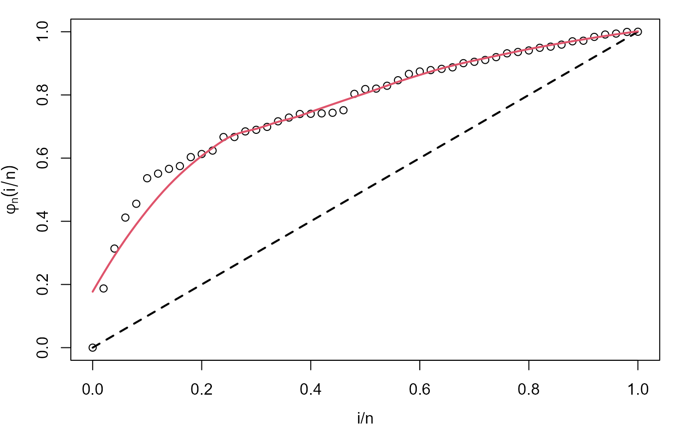

Draws the empirical total time on test (TTT) plot and its non-parametric (LOESS) estimated curve useful for identifying hazard shape.
# S3 method for HazardShape plot( x, xlab = "i/n", ylab = expression(phi(i/n)), xlim = c(0, 1), ylim = c(0, 1), col = 1, lty = NULL, lwd = NA, main = "", curve_options = list(col = 2, lwd = 2, lty = 1), par_plot = list(mar = c(5.1, 4.1, 4.1, 2.1)), legend_options = NULL, ... )
Arguments
| x | an object of class |
|---|---|
| xlab, ylab | titles for x and y axes, as in |
| xlim | the x limits (x1, x2) of the plot. |
| ylim | the y limits (x1, x2) of the plot. |
| col | The colors for lines and points. Multiple colors can be specified. This is
the usual color argument of |
| lty | a vector of line types, see |
| lwd | a vector of line widths, see |
| main | a main title for the plot. |
| curve_options | a list with further arguments useful for customization of non-parametric estimate plot. |
| par_plot | some graphical parameters which can be passed to the plot. See Details section for further information. |
| legend_options | a list with fur further arguments useful for customization. See Details section for further information. of the legend of the plot. |
| ... | further arguments passed to empirical TTT plot. |
Details
This plot complements the use of TTT_hazard_shape. It is always
advisable to use this function in order to check the result of non-parametric estimate
of TTT plot. See the first example in Examples section for an illustration.
par_plot admits some parameters of par function.
The following has preestablished values:
mai:the margins can be manipulated withmar. The right margin has a value equals to 7.2 usingmarand all new values take it as reference value.xpd:Is set asTRUE, and cannot be modified.
On the other hand, legend_options allows many of the parameters of
legend function. The following has preestablished values:
x, y:legend is always located on the right side, outside the plot.xandycoordinates cannot be manipulated, instead of this, it exists the argumentpos, which can take character or numeric values. In the first case, it can be"top", "center"and"bottom", in the later, it can be any value of the y-coordinate, between 0 and 1.legend:text of the legend cannot be edited.pch:cannot be manipulated, it depends onpchparameter of the plot.col:cannot be manipulated, it depends oncolparameters of the plot and the curve_options. #'lty:cannot be manipulated, it depends onltyparameters of the plot and the curve_options. #'lwd:cannot be manipulated, it depends onlwdparameters of the plot and the curve_options. #'pt.cex:cannot be manipulated, it depends oncexparameter of the plot.xpd:It is set asTRUE, and cannot be modified.
If legend_optinos = "NoLegend", no legend is generated.
The possible arguments for ... can be consulted in
plot.default and par.
Author
Jaime Mosquera Gutiérrez jmosquerag@unal.edu.co
Examples
#-------------------------------------------------------------------------------- # Example 1: Increasing hazard and its corresponding TTT plot with simulated data hweibull <- function(x, shape, scale){ dweibull(x, shape, scale)/pweibull(x, shape, scale, lower.tail = FALSE) } curve(hweibull(x, shape = 2.5, scale = pi), from = 0, to = 42, col = "red", ylab = "Hazard function", las = 1, lwd = 2)y <- rweibull(n = 50, shape = 2.5, scale = pi) my_initial_guess <- TTT_hazard_shape(formula = y ~ 1) plot(my_initial_guess, par_plot=list(mar=c(3.7,3.7,1,1.5), mgp=c(2.5,1,0)))#--------------------------------------------------------------------------------